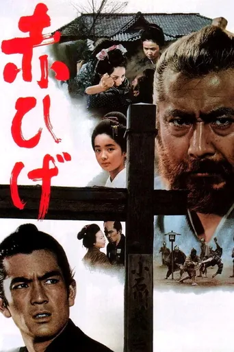

Красная борода 1965
Красная Борода — это прозвище врача больницы для бедных, в которую после университета попадает молодой честолюбивый доктор Ясумото. Он не принимает порядки, царящие в больнице, строгость и грубость доктора.
Открыть в каталогеДанные и постеры принадлежат их правообладателям. Этот продукт использует TMDB API, но не одобрен и не сертифицирован TMDB.